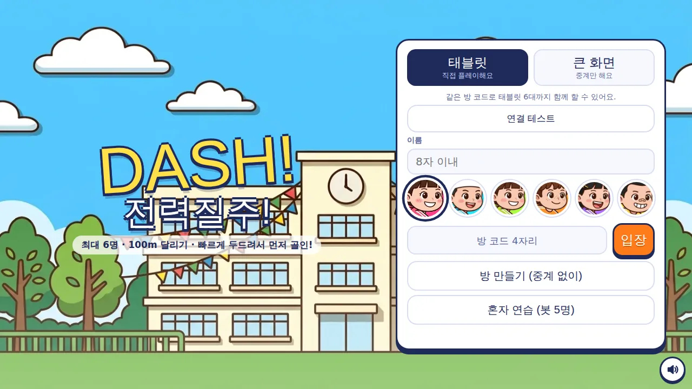
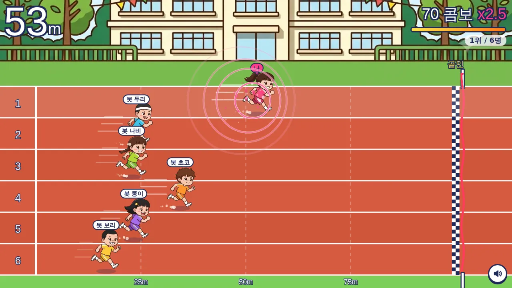
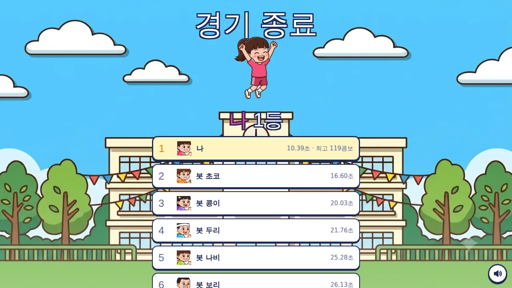

행사 진행용 · 최대 6명 · 큰 화면 중계
✈️ 액션 게임 · 무료 · 설치 없음
DASH! 전력질주!
“빠르게 두드려서 먼저 골인!”
- 한 판 10~20초
- 최대 6명 대결
- 큰 화면 중계
- 효과음·배경음
회원가입 없이 누르면 바로 시작돼요
어떤 게임인가요?
맑은 날, 삼각 깃발이 걸린 운동장. 체육복을 입은 아이 여섯 명이 출발선에 섰어요. 삐, 삐, 삐… 호루라기가 울리면 달리기 시작!
화면을 두드리는 만큼 내 선수가 달려요. 끊지 않고 두드리면 콤보가 쌓여 속도가 ×1.5, ×2, ×2.5까지 올라가고, 앞 선수를 제치는 순간 「추월!」이 터져요.
한 판이 10~20초라 줄이 길어도 금방 차례가 와요. 결승 테이프를 끊는 1등에게는 팡파레가, 모두에게는 골인 기록과 최고 콤보가 남아요.
이렇게 해요
- STEP 1
선수를 골라요
이름을 쓰고 체육복 색이 다른 여섯 명 중 한 명을 골라요.
- STEP 2
빠르게 두드리기
출발 신호가 울리면 화면 아무 데나 빠르게 두드려요. 컴퓨터는 스페이스바를 연타해요.
- STEP 3
먼저 골인!
100m를 먼저 달린 사람이 1등. 30초 안에 못 들어오면 달린 거리로 순위를 매겨요.


✨ 알아 두면 좋아요
- 끊지 않고 두드려야 콤보가 이어져요. 오른쪽 위 게이지가 차면 다음 속도 단계로 올라가요.
- 최고 속도가 정해져 있어서 아무리 빨리 두드려도 100m에 10초쯤 걸려요. 손가락을 여러 개 써도 더 빨라지지 않으니 공평하게 겨룰 수 있어요.
- 두드리지 않고 멈춰 있으면 화면 아래에 「탭!」 버튼이 다시 나타나 알려 줘요.
- 큰 화면(노트북·TV)은 게임에 끼지 않고 여섯 레인 전체를 중계하며, 선두와 1~3등 골인을 크게 보여 줘요. 주소 끝에 ?spec=1 을 붙이면 「큰 화면」이 미리 골라져 있어요.
- 혼자 해 보고 싶으면 「혼자 연습」으로 봇 다섯 명과 달릴 수 있어요.
이런 분께 추천해요
- 여럿이 모여 짧게 한 판씩 겨룰 게임을 찾는 분
- 누구나 규칙을 바로 아는 쉬운 게임이 필요한 분
- 행사장에서 줄 서서 차례로 즐길 게임이 필요한 분
처음이라면 「혼자 연습 (봇 5명)」으로 한 번 달려 보세요. 여럿이 할 때는 큰 화면 하나를 중계로 두면 응원하는 재미가 커져요. 로비의 「연결 테스트」로 인터넷이 잘 되는지 먼저 확인할 수 있어요.
📱 어떤 기기에서 하면 좋을까요?
- 가장 좋아요태블릿 가로·세로 모두
두드리기 편하고 선수가 크게 보여요. 가로로 두면 로비가 두 칸으로 바뀌어 한 화면에 다 보여요.
- 좋아요휴대폰 가로·세로 모두
처음 누를 때 전체 화면으로 바뀌어요. 어디를 두드려도 달려요.
- 좋아요컴퓨터·노트북 스페이스바
스페이스바나 Enter를 연타하거나 마우스로 클릭해요. 큰 화면 중계용으로도 좋아요.
오른쪽 위 메뉴(⋮ 또는 ···)에서 「다른 브라우저로 열기」를 눌러 크롬이나 사파리로 열어 주세요. 앱 안에서는 전체 화면이 안 되고 저장이 풀릴 수 있어요.
🍎 아이폰·아이패드에서는
- ① 사파리로 열기
카카오톡이나 네이버 앱 안에서 열면 화면이 좁아요. 오른쪽 아래 메뉴에서 「다른 브라우저로 열기」나 사파리로 열어 주세요.
- ② 홈 화면에 추가하기
아이폰은 전체 화면 기능이 막혀 있어요. 공유 버튼(□↑) → 「홈 화면에 추가」로 열면 주소창 없이 꽉 찬 화면이 돼요. 아이패드는 누르면 전체 화면이 돼요.
- ③ 소리
무음 스위치가 켜져 있으면 소리가 나지 않아요. 배경음은 큰 화면과 혼자 연습에서만 나오고, 오른쪽 아래 버튼으로 소리를 켜고 끌 수 있어요.
- ④ 인터넷
여럿이 할 때는 모든 기기가 인터넷(와이파이 또는 휴대폰 데이터)에 연결되어 있어야 해요. 쓰는 데이터는 아주 적어요.
🤖 갤럭시 등 안드로이드에서는
크롬이나 삼성 인터넷으로 열면 돼요. 처음 누를 때 전체 화면으로 바뀌고, 두드릴 때마다 짧게 진동해요.
▶ 바로 해 보기
설치도, 회원가입도 필요 없어요.
DASH! 전력질주! 시작하기game.edoori.co.kr/neon-dash/